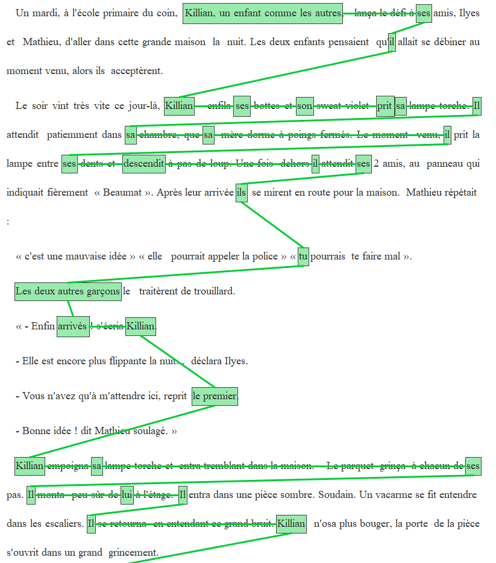

|
Guide d'annotation RésolCo [sommaire] Mis à jour le 17 juin 2022 |
|
Guide d'annotation RésolCo [sommaire] Mis à jour le 17 juin 2022 |
Ce guide a été élaboré dans le cadre d‘un projet de recherche financé par l'Agence Nationale de la Recherche : le projet É-calm. Ce projet avait pour objectif de structurer et mettre à disposition de la communauté scientifique une grande ressource constituée d'écrits d'élèves et d'étudiants enrichis d'annotations linguistiques.
Ce guide décrit la tâche d'annotation qui consiste à annoter les continuités référentielles -- CR -- dans des textes produits en milieu scolaire ou universitaire. Annoter les CR d'un texte revient à identifier les expressions référentielles qui les composent -- nous parlons de maillons -- et de relier ces expressions entre elles.
Une des caractéristique des textes produits en milieu scolaire ou universitaire est que ces textes ont été rédigés en réponse à une consigne d'écriture qui peut fréquemment imposer un certain nombre de personnages à faire exister dans le texte à produire (e.g., Racontez l'histoire de la rencontre entre Le Loup et Le Petit Chaperon Rouge). L'annotation décrite dans ce guide se focalise sur ces personnages que la consigne impose (e.g., Le Loup et Le Petit Chaperon Rouge).
Ce guide d'annotation est adapté à une consigne d'écriture spécifique la consigne RésolCo. Il ne peut, en l'état, être utilisé pour annoter des textes produits selon une autre consigne d'écriture car le choix a été fait de désigner explicitement les personnages imposés par la consigne RésolCo dans les explications du guide, afin de faciliter la compréhension de la procédure d'annotation.
Un exemple de ressource constituée selon ce guide peut être visualisée au lien suivant : http://redac.univ-tlse2.fr/corpus/resolco/exploration_coref.html
Pour annoter, vous allez utiliser l'interface Glozz et suivre les étapes suivantes :
Les textes que vous allez annoter font partie du corpus Résolco ("Résolution de problèmes de cohésion textuelle") et ont été collectés à l'école primaire, au collège et à l'université. Les élèves ont produit ces textes en réponse à une même consigne d'écriture, que nous reproduisons ci-dessous :
Racontez une histoire dans laquelle vous insérerez séparément et dans l'ordre donné les trois phrases suivantes :
Elle habitait dans cette maison depuis longtemps. (P1)
Il se retourna en entendant ce grand bruit. (P2)
Depuis cette aventure, les enfants ne sortent plus la nuit. (P3)
L'objectif de cette consigne est d'amener les élèves à résoudre plusieurs problèmes de continuité référentielle. Plus précisément, la consigne devrait pousser les élèves à introduire, dans les interstices des trois phrases imposées, les référents des expressions référentielles suivantes :
La tâche d'annotation concerne uniquement les expressions référentielles des trois référents humains de la consigne, à savoir Elle, Il et les enfants.
Dans les textes que vous allez annoter, certaines expressions linguistiques ont fait l'objet d'une préannotation. Il s'agit d'expressions qui, parce qu'elles sont considérées comme potentiellement référentielles et qu'elles peuvent de ce fait constituer de possibles maillons des CR, ont été automatiquement préannotées. Ces expressions, nous les appellerons des maillons-candidats.
Une CR est constituée par l'ensemble des expressions référentielles qui renvoient à un même référent et que nous appelons des maillons.
Le texte suivant, produit par un élève de 3e en suivant la consigne ci-dessus, fournit une illustration des notions de CR et de maillons.
Dans ce texte, les maillons de la CR_Elle dont la première mention est l'expression référentielle une jeune fille du nom de Marie sont surlignés en bleu. Parmi ces maillons, on trouve les expressions référentielles suivantes :
Parmi les éléments surlignés, on trouve également :
Les déterminants possessifs surlignés sont ceux qui coréfèrent au possesseur Marie. Dans ce cas, on voit que l'on ne considère que le déterminant comme constitutif du maillon. Le verbe allait, coordonné avec avait, est surligné pour indiquer que son sujet est le même que celui du verbe avait (voir plus bas la notion de sujet zéro).
Avant de commencer l'annotation, une première étape consiste à lire le texte dans sa globalité. Ensuite, chaque continuité doit être annotée l'une après l'autre en commençant par CR_Elle, puis CR_Il et CR_enfants.
L'annotation de chaque CR consiste à :
Une fois les maillons des trois CR annotés, une dernière étape consiste à relier les maillons Elle pour former la CR_Elle et ainsi de suite. Cette dernière étape est l'occasion de vérifier l'annotation. Elle permet en particulier à l'annotateur de vérifier que tous les maillons des trois CR ont bien été identifiés.
Les expressions linguistiques pouvant constituer les maillons sont décrites dans la section Types de maillons à identifier. La procédure pour annoter est décrite dans la section Procédure d'annotation des maillons et des CR.
On retrouve dans la copie ci-dessous l'ensemble des maillons rattachés à chacune des CR et les relations qui les unissent.
Cette copie a été utilisée comme exemple dans le tutoriel vidéo mis à disposition à la fin de ce guide. Cet exemple montre la diversité des expressions référentielles pouvant jouer le rôle de maillon (nom propre, pronom, déterminant possessif, etc.).
L'objectif de cette section est de décrire et d'illustrer la diversité des unités linguistiques susceptibles de constituer les maillons d'une CR. Les illustrations proposées sont issues de textes rédigés par des élèves.
Chaque exemple est donné sous la forme d'une capture d'écran de l'interface Glozz (dont l'utilisation pour l'annotation est décrite dans la section Utilisation de Glozz pour annoter les CR). Les maillons annotés apparaissent encadrés dans des boîtes de couleur. Chaque exemple est précédé d'un titre décrivant la CR annotée et le ou les maillons qui la composent dans l'ordre dans lequel ils apparaissent, ainsi que l'identifiant de la copie, identifiant qui commence par l'indication du niveau scolaire (EC-CE2, EC-CM1, EC-CM2, CO-6e, etc.). Un clic sur cet identifiant donne accès à une visualisation de la copie manuscrite produite par l'élève et d'une version annotée permettant d'afficher pour chaque référent, l'annotation des continuités référentielles.
Les SN indéfinis, définis, démonstratifs et possessifs (ex.: une fille, la fille, cette fille, sa fille) sont annotés quand ils réfèrent à un des trois référents humains considérés. La délimitation de ce type de maillon inclut le groupe nominal ainsi que l'ensemble de ses modifieurs (antéposés ou postposés au nom ou au groupe nominal) exceptés les propositions relatives qui constituent un maillon distinct (cf. ici).
Ces modifieurs peuvent être :

Dans le cas où il y a plusieurs modifieurs, ces derniers sont inclus dans la délimitation du maillon. Comme on l'a vu ci-dessus avec un petit frère Maxence et comme on le voit encore dans l'exemple suivant :
Les expressions possessives coréfèrent au possesseur. Seule la mention du possesseur (le déterminant possessif) doit être délimitée.
Les pronoms personnels sont annotés quand ils réfèrent à un des trois référents humains.
Les pronoms démonstratifs sont annotés quand ils réfèrent à un des trois référents humains.
Les pronoms indéfinis sont annotés quand ils réfèrent à un des trois référents humains.
Lorsque le nom ou le groupe nominal composant un maillon est modifié par une proposition relative, seul le pronom relatif est à considérer comme un nouveau maillon, et doit être annoté. Le nouveau maillon est donc dans ce cas composé du seul pronom relatif.
Dans l'exemple ci-dessous, on voit deux propositions relatives : la première est introduite par dont la deuxième, éloignée de son antécédent, est introduite par que. Dans ces cas, malgré l'éloignement, on annote les deux pronoms relatifs.

N.B.: Les pronoms réfléchis ne sont pas annotés.
Lorsque l'expression référentielle prend la forme d'un nom propre (NP), elle est systématiquement annotée, sauf dans les cas de didascalies nominatives (voir la section sur le Discours direct).
Les maillons de forme NP peuvent être composés d'un prénom suivi d'un nom de famille (Zack Ston), d'un prénom (Zack) ou uniquement d'un nom de famille (Ston). Si le nom propre est précédé d'un titre, le maillon inclut ce titre (Docteur Zack Ston, Mme Ston).
Lorsque le nom propre du référent est intégré dans une relative (cas fréquent de type Il était une fois une fille qui s'appelait Pascale), le NP doit être annoté en plus du pronom relatif (voir la section sur les pronoms relatifs) :
Il est fréquent dans les cas de coordination verbale que le sujet ne soit pas répété pour chaque verbe mais uniquement instancié en sujet du premier verbe ("Elle est venue, a vu et a vaincu" vs. "Elle est venue, elle a vu et elle a vaincu"). Dans ces contextes, la seule façon d'annoter le sujet de tous les verbes est d'annoter le groupe verbal. Afin de simplifier la procédure de délimitation lors de l'annotation, nous avons décidé d'inclure dans le maillon l'ensemble du groupe verbal, ce qui peut amener à inclure dans un maillon les marques de négation, les auxiliaires en cas de temps composé, les pronoms réfléchis et certains pronoms clitiques objets (ex : Elle s'est enfuie et [ne s'est jamais remise] de ce drame).
La même situation se rencontre dans les cas de verbes à l'impératif. Dans ces contextes, on annotera le verbe lui-même.
Les textes peuvent contenir des référents multiples c'est-à-dire des expressions qui désignent un groupe d'individus. Ces référents peuvent être désignés par des pronoms pluriels (elles, eux, celles-ci, etc.), des SN pluriels (les deux frères, les amis) ou des SN collectifs (le groupe de copines, toute la famille, etc.). Ces référents multiples sont à distinguer des SN coordonnés comme Camille et Manu où chaque individu est mentionné individuellement sans désignation d'un référent commun.
Si ce référent multiple désigne un groupe intégrant un des référents humains de la consigne, on annote alors ce référent multiple comme un maillon de la CR concernée et on attribue à ce maillon le trait groupe. Ce choix d'annotation permet de conserver l'information de l'existence d'une continuité référentielle (et non d'une coréférence stricte).
Dans l'exemple ci-dessous, le référent Elle est introduit dans le texte par le biais du SN collectif : un groupe d'amis composés de deux filles Marie et Jeane et de deux garçons Max et Thomas (Elle correspond à Jeane). On délimite alors le SN désignant tout le référent collectif comme maillon de la CR_Elle et on lui attribue le trait groupe. Il est important de noter que, même si Jeane est désignée individuellement dans l'expression du référent multiple, c'est le référent groupe d'amis [...] qui est considéré comme le maillon de la CR_Elle. D'autres maillons sont ensuite annotés: certains avec le trait groupe (ils), d'autres sans (tu, Elle, sa, ...)
Dans l'exemple ci-dessous, c'est le référent Il qui est intégré dans un référent multiple au bout de la 17e mention, sous la forme du pronom personnel pluriel (ils), alors considéré comme un maillon de la CR_Il. Les référents multiples ils et Les deux autres garçons sont également annotés comme des maillons de la CR_Il avec le trait groupe.
|  |
Le référent les enfants est en soi un référent multiple. Cependant, le trait groupe n'est associé aux maillons de la CR_enfants que si ce maillon désigne un référent multiple intégrant d'autres référents que les enfants (ex : toute la famille).
Si le référent multiple réfère uniquement à les enfants, le maillon de la CR_enfants ne reçoit pas le trait groupe. En revanche, si le référent multiple inclut d'autres membres que les enfants, les maillons de la CR_enfants reçoivent le trait groupe.
Étant donné les 3 phrases de la consigne RésolCo, il est tout à fait probable que le référent multiple désigne à la fois les enfants et un groupe incluant Elle et/ou Il;
Il faut alors annoter deux, voire trois fois ce référent :
Dans l'exemple ci-dessous, le référent multiple deux enfants, Marine, la fille aînée et Maxime son petit frère inclut le référent de Il et réfère à les enfants. Ce qui n'est pas le cas du rèférent de Elle qui désigne ici un autre personnage et n'est pas inclus dans la CR_enfants.

Il peut également arriver que le texte commence directement par un maillon désignant un référent multiple impliquant les référents de la consigne. Dans l'exemple ci-dessous, l'expression coordonnée Camille et Manu est le premier maillon de la CR_enfants. Cette CR est ensuite composée des maillons ils, ils, ils, ils, eux, les enfants. Aucun de ces maillons de la CR_enfants ne reçoit le trait groupe.
Puisque les enfants désignent Camille et Manu (Elle et Il), les expressions collectives associées à les enfants, c'est-à-dire ils, ils, ils, ils, eux, les enfants sont également délimitées et rattachées comme maillons de CR_Elle et de CR_Il. Ces maillons, rattachés à CR_Elle et CR_Il, reçoivent alors le trait groupe. Le syntagme coordonné "Camille et Manu" n'est pas considéré comme un maillon "groupe" de CR_Elle oui CR_Il puisqu'aucune expression désignant une entité commune n'est instanciée (un maillon de type groupe pour les référents Elle et Il aurait été annoté si l'expression avait été Le duo Camille et Manu).
Cette copie est également celle utilisée comme exemple dans le tutoriel vidéo mis à disposition à la fin de ce guide.
On considère que le passage au discours direct ne constitue pas une rupture de la chaîne. Ainsi on annote moi comme un maillon de la CR_Elle introduite par Jeane, de même que chacune des occurrences du pronom personnel je qui suivent.
En revanche, la didascalie nominative Jeane : n'est pas considérée comme un maillon.
Certaines copies contiennent des titres dans lesquels peuvent figurer des maillons. Le cas échéant, le maillon sera à annoter selon les règles décrites précédemment.
Pour plusieurs raisons, il n'est pas toujours facile de déterminer si telle expression référentielle est bien rattachée au référent en cours d'annotation. Il peut notamment y avoir dans le contexte plusieurs expressions disponibles pour un même référent. C'est le cas ci-dessous où le possessif sa peut coréférer à la vieille femme ou à elle. Dans ce cas, on fera un choix et seule l'expression qui paraît la plus cohérente pour construire l'interprétation sera annotée. Toutefois, l'annotateur devra indiquer son incertitude concernant le rattachement du maillon, en lui attribuant une étiquette signalant cette incertitude.
Un autre cas d'incertitude concerne les cas où deux interprétations différentes du texte sont envisageables. Nous l'illustrons ci-dessous avec l'exemple des maillons de la CR_Il.
Dans cet exemple, en lisant le texte, on peut se demander si le référent associé à Il est l'homme ou bien une ombre d'homme. Les deux interprétations sont possibles. Il n'y a donc, dans ce cas, pas une seule réponse possible.
La copie d'écran ci-dessous illustre un cas où l'annotateur a fait le choix d'annoter homme, L'homme et il. La CR_Il est alors composée de 3 maillons.
Une autre interprétation consiste à considérer que une ombre d'homme et l'homme réfèrent à la même entité (Il). C'est cette seconde interprétation que nous illustrons dans l'exemple ci-dessous. Dans ce cas, la CR_Il est composée de 11 maillons, dont certains sont des expressions référentielles au féminin.
Quel que soit son choix, l'annotateur annotera les expressions en leur attribuant une étiquette signalant l'incertitude.
Un autre cas fréquent d'incertitude de rattachement concerne les maillons désignant des Référents multiples. Pour illustrer ce cas, nous relatons ci-dessous un échange entre annotateurs :
Question : On comprend que l'on doit signaler un trait "groupe" quand on a par exemple un "ils" qui renvoie à X + Y et désigne le référent "les enfants". Dans le texte que nous avons regardé, on a par exemple ils = Tina (la maman) + les enfants, ou bien "leur" (leur maison) = Tina (la maman) + les enfants. Mais doit-on indiquer un trait "groupe" sur des occurrences de l'expression "les enfants" ou bien sur un "ils" qui anaphorise seulement "les enfants", à l'exclusion de tout autre référent ? Je te copie l'exemple :
Depuis cette aventure, les enfants ne sortent plus la nuit. Ils ne peuvent s'empêcher de penser à cette silhouette familière qui s'est échappée durant cette fameuse nuit où les étoiles ne brillaient pas.
Complément à cette question : est-ce que l'on indique le trait groupe à toute expression qui co-réfère exclusivement à "les enfants" ? Dans le texte en question (le premier de la liste si je ne me trompe), on a une première occurrence de "ses enfants" (qui sont "les enfants" de la phrase consigne) puis des expressions plurielles qui associent la maman et les enfants, mais aussi des "ils" ou "leur" qui ne désignent que "les enfants".
Réponse : Dans cet exemple, il n'y a le trait "groupe" que si l'on interprète que "'ils" réfère à "les enfants" PLUS d'autres personnes (d'après ce que tu dis, les enfants PLUS Tina).
Un autre cas d'incertitude concerne les maillons de la CR_enfants. On peut notamment rencontrer des expressions linguistiques signalant un membre de les enfants, qui ne soit pas un référent associé à Elle ni un référent associé à Il.
Dans l'exemple ci-dessous, ces expressions n'ont pas été annotées.
Une autre possibilité serait d'annoter les expressions référentielles signalant un membre de les enfants, qui ne soit ni le référent associé à Elle ni le référent associé à Il.
Dans l'exemple ci-dessous, sont annotées les expressions l'autre Gile, Gile et lui en tant que maillons de la CR_enfants. Les expressions associées à Il n'ont pas été associées à la CR_enfants puisqu'elles sont prises en charge par l'annotation de la CR_Il.
Dans ce cas, l'annotateur ajoutera en commentaire : 'Membre de "lesEnfants"', comme illustré ci-dessous.

La procédure pour associer ces degrés d'incertitude à chaque unité est décrite en section Créer une annotation "unité" (maillon).
Il est également possible de laisser, pour chaque unité, un commentaire libre. Une autre possibilité consiste à insérer des commentaires libres à des endroits spécifiques comme indiqué dans la section Laisser un commentaire via les glue notes.
Un autre cas d'incertitude peut concerner la délimitation du maillon. Dans un tel cas, l'annotateur devra indiquer qu'il a une incertitude de délimitation du maillon.
La procédure pour associer ces degrés d'incertitude à chaque unité est décrite en section Créer une annotation "unité" (maillon).
Il est également possible de laisser, pour chaque unité, un commentaire libre. Une autre possibilité consiste à insérer des commentaires libres à des endroits spécifiques comme indiqué dans la section Laisser un commentaire via les glue notes.
Pour chaque CR, l'annotation des maillons consiste en la création d'unités dédiées (voir section Créer une annotation "unité" (maillon)) qui aboutit à la création d'unités de type maillon_Elle, maillon_Il et maillon_lesEnfants. Le choix du type d'unité indique le rattachement du maillon à l'une des trois CR.
Une fois le maillon délimité, l'annotation des unités maillons nécessite le renseignement d'un certain nombre de traits comme le fait que le maillon soit associé au trait groupe ou pas (dans les cas de référents multiples) et le degré de certitude de l'annotation réalisée (voir ici). Toute annotation peut également être associée à un commentaire donnant plus de détails sur la décision prise ou l'incertitude indiquée.
Une fois les unités maillons annotées, la dernière étape consiste à relier entre elles les unités maillons d'une même chaîne (voir section Relier deux unités). Cette dernière étape est l'occasion de vérifier l'annotation.
Dans les textes que vous allez annoter, certaines expressions linguistiques ont fait l'objet d'un prémarquage ayant pour fonction de faciliter la tâche d'annotation. Il s'agit d'expressions qui, parce qu'elles sont considérées comme référant potentiellement aux 3 référents humains, constituent des maillons-candidats des trois CR considérées. Ces maillons-candidats pourront être validés en leur attributant l'étiquette maillon_Elle, maillon_Il et maillon_lesEnfants.
L'exemple ci-dessous fournit une illustration - pour le même texte que celui que nous avons commenté dans la section Définitions : CR et maillons - du résultat du prémarquage automatique d'unités appelées "maillons-candidats". Ces "maillons-candidats" correspondent à des éléments fortement susceptibles d'être des unités de type maillon_Elle, maillon_Il ou maillon_lesEnfants, à savoir :
Les maillons-candidats sont à considérer comme des propositions qui sont faites à l'annotateur pour l'assister dans sa tâche d'identification des maillons. Chaque maillon-candidat doit être validé par l'annotateur. Cette validation s'effectue par l'attribution de l'étiquette adéquate. En terme de procédure d'annotation, cela revient à créer une unité maillon_X (voir section Créer une annotation "unité" (maillon)) qui se superpose au maillon-candidat. Le prémarquage étant automatique, certains maillons-candidats peuvent parfois paraître surprenants, notamment concernant le prémarquage des noms propres et des pronoms personnels.
Tous les NPP ont été considérés comme des maillons-candidats, même ceux pouvant désigner un référent non humain, comme "Vendée" ou "22H" dans l'exemple ci-dessus. Ces maillons-candidats ne doivent évidemment pas faire l'objet d'une validation et peuvent être supprimés au moment de l'annotation (voir section Supprimer une unité)
Parfois, un NPP n'a pas été prémarqué, comme le nom "Clément" dans l'exemple ci-dessous.
Dans ce cas, si "Clément" est inclus dans une des CR de la consigne, l'annotateur devra créer une nouvelle unité (voir section Créer une annotation "unité" (maillon)).
Il se peut également que les noms propres soient prémarqués de façon incomplète, comme le montre l'exemple ci-dessous où "Mr" n'a pas été inclus dans le maillon-candidat "Mr Wilson".
Tous les pronoms clitiques sujets il ont été prémarqués, qu'il s'agisse d'un emploi personnel (Il se retourna en entendant ce grand bruit) ou impersonnel (Il était un fois, Il pleut, Il est évident que...). Ces maillons-candidats ne doivent évidemment pas faire l'objet d'une validation et peuvent être supprimés au moment de l'annotation (voir section Supprimer une unité).
L'annotation des CR se fait en identifiant toutes les UNITÉS ( ) qui correspondent aux expressions référentielles référant aux référents humains mentionnés dans les phrases consignes.
) qui correspondent aux expressions référentielles référant aux référents humains mentionnés dans les phrases consignes.
L'annotation consiste à créer trois types d'UNITÉS ( ) :
) :
et à relier ces UNITÉS par trois types de RELATIONS ( ) :
) :
Afin de réaliser l'annotation en distinguant chaque étape et chaque CR (voir section Description de la tâche d'annotation), il est conseillé de commencer par annoter toutes les unités de type maillon_Elle (y compris le maillon contenu dans la phrase consigne). Une fois tous les maillon_Elle annotés, il est conseillé de masquer ces annotations avant de commencer l'annotation des unités de type maillon_Il, et idem pour l'annotation des unités de type maillon_lesEnfants. Cela permet d'avoir une vue dégagée du texte, ce qui facilite l'annotation.
L'annotation des relations doit se réaliser après l'annotation de toutes les unités maillons et est grandement facilitée par ce jeu de masque des unités non concernées par la relation. Ainsi, pour annoter les relations de type coref_Elle, il est conseillé de n'afficher que les unités de type maillon_Elle.
Ce jeu de masque et d'affichage se fait en utilisant l'outil
L'interface d'annotation Glozz a été conçue dans les cadre de projets académiques pour permettre l'annotation de structures discursives complexes. Elle permet de délimiter des unités (dans notre cas, délimiter les maillons), de leur associer un style et des caractéristiques et de relier ces unités. La première étape avant de commencer est de télécharger et installer Glozz.
Pour télécharger le logiciel il faut se rendre sur le site suivant http://glozz.free.fr/ et remplir les champs proposés dans la section Installer Glozz pour annoter les CR.
Il faudra également suivre les indications pour demander une clé d'accès à Glozz, sans laquelle vous ne pourrez pas annoter.
Si vous avez des difficultés à trouver ces indications sur le site, suivez les informations ci-dessous :
Pour installer le logiciel suivez les indications présentes sur le site et sur le manuel : http://glozz.free.fr/glozzManual_1_0.pdf
Une fois l'installation terminée, vous pouvez lancer Glozz. Pour ce faire, vous avez plusieurs possibilités :
Toutes les procédures d'annotation se font avec l'interface d'annotation dans laquelle nous distinguons les zones suivantes :

Pour éviter des problèmes de mémoire au demarrage de Glozz, nous vous conseillons de modifier le paramétrage qui prévoit de recharger le dernier travail à chaque démarrage du logiciel dès la première utilisation de la plateforme d'annotation, surtout si vous travaillez sur des gros fichiers. Pour ce faire, une fois que Glozz aura demarré, cliquez sur Options puis Préférences et sur l'onglet Launch, décochez la case
Par défaut, le chargement d'un texte est accompagné d'une visualisation de toutes les couches d'annotations qui lui sont associées, mêmes celles qui relèvent pas du modèle d'annotation choisi. Ces annotations, dans le cas des copies d'élèves, indiquent les ratures, les fautes d'orthographe, les commentaires de enseignants, etc. L'affichage de ces annotations ne fera que perturber l'annotation des CR. Pour neutraliser cet affichage, cliquez sur
Barre d'outils :
Options > Préférences puis sur l'onglet Viewer :

Ce paramétrage restera mémorisé pour toutes vos prochaines sessions de travail sous Glozz.
Si vous le souhaitez, vous pouvez régler la taille d'affichage du texte : taille de police et taille des interlignes en cliquant sur
Pour que les modifications soient prises en compte il est nécessaire de re-importer le fichier que vous voulez annoter. Si vous ne l'avez pas importé, il suffit de le faire après avoir modifié les paramètres. Ce paramétrage restera mémorisé pour toutes vos prochaines sessions de travail sous Glozz.
Une fois l'interface ouverte, il faut charger le texte à annoter, le modèle d'annotation et la feuille de style permettant de visualiser les annotations. Les fichiers correspondant au modèle d'annotation et à la feuille de style sont disponibles dans la Zone de téléchargement. Ce n'est qu'une fois tous ces fichiers chargés dans Glozz que l'annotation peut commencer.
Charger le texte à annoter en cliquant sur le bouton  (Open corpus) situé dans la barre d'outils.
(Open corpus) situé dans la barre d'outils.
Deux éléments doivent être chargés : le texte (fichiers avec extension .ac) et le fichier contenant les annotations (fichiers portant le même nom mais avec l'extension _coref.aa). Vous pouvez également charger un fichier contenant des annotations que vous avez réalisées et sauvegardées (voir la section Enregistrer les annotations).
Si le fichier .aa n'apparaît pas dans la fenêtre, il faut sans doute modifier le type de fichier à visualiser en choisissant .aa file.
Charger le modèle d'annotation en cliquant sur le bouton  dans la barre d'outils. Sous glozz, un modèle d'annotation est un fichier avec une extension .aam. Pour cette tâche d'annotation, il faut charger le modèle resolco_coref.aam. Les unités et relations à annoter apparaissent alors dans la ZONE MODÈLE (en bas à droite)
dans la barre d'outils. Sous glozz, un modèle d'annotation est un fichier avec une extension .aam. Pour cette tâche d'annotation, il faut charger le modèle resolco_coref.aam. Les unités et relations à annoter apparaissent alors dans la ZONE MODÈLE (en bas à droite) 
Charger la feuille de style qui permet de colorer dans le ruban et la
zone texte les futures annotations, les maillons-candidats et les phrases consignes. Pour charger la feuille de style, cliquer sur le bouton  (Style editor) situé dans la barre d'outil, puis sur le bouton
(Style editor) situé dans la barre d'outil, puis sur le bouton  (Open style) dans la fenêtre concernée. Le fichier de base pour cette tâche d'annotation se trouve dans le fichier resolco_coref.as. Une fois la feuille de style resolco_coref.as chargée, les maillons-candidats apparaissent grisés et les phrases consignes encadrées.
(Open style) dans la fenêtre concernée. Le fichier de base pour cette tâche d'annotation se trouve dans le fichier resolco_coref.as. Une fois la feuille de style resolco_coref.as chargée, les maillons-candidats apparaissent grisés et les phrases consignes encadrées.
La feuille de style reste par défaut ouverte en arrière plan de la fenêtre principale de l'interface Glozz. Afin d'éviter d'ouvrir plusieurs fenêtres, il est conseillé de fermer systématiquement la fenêtre style une fois le style chargé et les unités/relations affichées ou masquées (voir section Charger le modèle d'annotation et la feuille de style associée). Pour réouvrir la fenêtre, il suffit de recliquer sur le bouton  .
.
Le mode par défaut lorsque un nouveau texte est chargé est le mode visualisation (bouton OEIL enfoncé dans la ZONE OUTILS). À tout moment, il est conseillé de passer dans ce mode (en cliquant sur le bouton OEIL) pour avoir un aperçu global de l'état d'avancement de l'annotation.
Tout maillon d'une des CR à annoter doit donner lieu à la création d'une unité.
Pour créer une unité, il faut d'abord passer en mode  (Create a new simple Unit) dans la ZONE OUTILS. Une fois le bouton enfoncé, il faut sélectionner le type de l'unité à créer, à savoir maillon_Elle, maillon_Il ou maillon_lesEnfants en cliquant sur le type adéquat dans le modèle d'annotation affiché dans la ZONE MODÈLE (en bas à droite)
(Create a new simple Unit) dans la ZONE OUTILS. Une fois le bouton enfoncé, il faut sélectionner le type de l'unité à créer, à savoir maillon_Elle, maillon_Il ou maillon_lesEnfants en cliquant sur le type adéquat dans le modèle d'annotation affiché dans la ZONE MODÈLE (en bas à droite)  .
.
Par défaut, toute nouvelle unité est associée au type de l'unité précédemment annotée. Si aucune unité n'a encore été créée, la nouvelle unité sera associée au type u_default.
Passez ensuite à la délimitation de l'unité dans la ZONE CENTRALE.
La délimitation des unités peut se faire de deux manières :
Si les délimitations n'apparaissent pas à l'écran cela signifie qu'aucun style n'est associé à l'unité. Vous devez alors vérifier que l'objet que vous annotez (dont le nom est inscrit et sélectionné dans la zone modèle) a bien un style associé dans la fenêtre Style editor (voir section Charger le modèle d'annotation et la feuille de style associée).
Lorsque vous souhaitez annoter une forme élidée (ex : [l']) Glozz peut avoir tendance à étendre automatiquement l'annotation en incluant le mot qui suit la forme élidée (ex : [l'appela]). Pour ne délimiter que la forme élidée, il faut d'abord créer l'unité même si la délimitation n'est pas correcte puis la modifier en suivant les instructions fournies en section Modifier une unité).
Une fois cette unité créée, vous pouvez renseigner dans la ZONE TRAITS certaines informations sur cette unité par rapport au degré d'incertitude concernant sa délimitation et son rattachement (voir section Incertitude sur l'identification des maillons) et si l'unité appartient à la classe groupe (voir section Référents multiples). Par défaut l'unité maillon est associée à un degré incertitude nul (pas d'incertitude). Pour modifier ces valeurs, il suffit de cliquer sur les champs concernés, de saisir les valeurs et d'enregistrer les caractéristiques en appuyant sur la touche "Entrée".
À tout moment, il est conseillé de passer dans le mode visualiation (en cliquant sur le bouton OEIL dans la ZONE OUTILS) pour avoir un aperçu global de l'état d'avancement de l'annotation.
Si vous souhaitez modifier l'annotation d'une unité (sa délimitation, son type ou ses traits), vous devez passer en mode  dans la ZONE OUTILS. Une fois le bouton enfoncé, vous pouvez
dans la ZONE OUTILS. Une fois le bouton enfoncé, vous pouvez
En mode  enfoncé),
enfoncé),
Lorsque le curseur de la souris passe sur une annotation, celle-ci change de couleur. En présence d'annotations superposées, toutes les annotations concernées changent de couleur. Pour sélectionner une annotation lorsque les annotations superposées ont les mêmes limites, il faut cliquer plusieurs fois pour sélectionner l'annotation désirée et voir apparaître les pointillés rouges la délimitant.
Il peut s'avérer rapidement difficile de distinguer les annotations si celles si sont superposées. Pour cela, l'interface propose un outil appelé Depth Selector qui permet de jouer sur les couches d'annotation visibles. Pour activer cette fonction, cliquez dans la barre d'outils sur Tools puis Depth Selector. La boîte de dialogue suivante apparaît alors dans la zone droite de l'interface : 
Il suffit ensuite de manipuler le curseur pour faire varier l'affichage des différents niveaux d'annotation.
En mode  enfoncé),
enfoncé),
Une fois le type de l'annotation modifié, il faut renseigner les caractéristiques de cette unité dans la ZONE TRAITS (degré d'incertitude concernant sa délimitation et son rattachement, appartenance à la classe groupe ou pas). Par défaut le maillon annoté est associé à un degré d'incertitude nul. Pour modifier ces valeurs, il suffit de cliquer sur les champs concernés, de saisir les valeurs et d'enregistrer les caractéristiques en appuyant sur la touche "Entrée".
Vous pouvez utiliser cette procédure pour transformer les annotations de type maillon-candidat en unité de type maillon_Elle/Il/lesEnfants, mais il est conseillé, lors de vos premières annotations, de créer une nouvelle annotation par dessus un maillon-candidat pour conserver la trace de maillons-candidats. Un annotateur expérimenté sera plus à même de choisir dans quels cas modifier l'annotation et dans quels cas superposer une nouvelle annotation.
Si vous souhaitez supprimer une annotation, il faut être en mode  enfoncé).
enfoncé).
Les unités de type maillon-candidat qui gênent l'annotation peuvent être supprimées, mais ce n'est pas une obligation.
Une fois les unités maillons d'une CR créées, une dernière étape consiste à valider la chaîne en reliant tous ses maillons par une relation de coréférence.
Pour cette étape, il est recommandé de cacher les maillons-candidats et les maillons des autres CR en jouant avec les styles (voir section Charger le modèle d'annotation et la feuille de style associée)
Pour relier des unités entre elles, il faut passer en mode création de relation en cliquant sur le bouton  dans la ZONE OUTILS. Une fois le bouton enfoncé, il faut sélectionner le type de la relation à créer, à savoir coref_Elle, coref_Il ou coref_lesEnfants en cliquant sur le type adéquat dans la colonne "relations" du modèle d'annotation affiché dans la ZONE MODÈLE (en bas à droite)
dans la ZONE OUTILS. Une fois le bouton enfoncé, il faut sélectionner le type de la relation à créer, à savoir coref_Elle, coref_Il ou coref_lesEnfants en cliquant sur le type adéquat dans la colonne "relations" du modèle d'annotation affiché dans la ZONE MODÈLE (en bas à droite)  .
.
Par défaut, toute nouvelle relation est associée au type de la relation précédemment annotée. Si aucune relation n'a encore été créée, la nouvelle relation sera associée au type r_default.
Passez ensuite à la sélection des maillons à relier en cliquant à chaque fois sur les deux unités maillon à relier.
Toute annotation de relation s'établissant entre deux unités, il est nécessaire de cliquer sur le 1er maillon et le 2e, puis de cliquer à nouveau sur le 2e pour le relier au 3e et ainsi de suite.
Vous pouvez à tout moment modifier ou supprimer une relation en passant en mode édition de relation en cliquant sur le bouton  . Une fois en mode édition de relation, vous pouvez sélectionner la relation et choisir de modifier les unités reliées, son type ou de supprimer la relation en appuyant sur la touche Suppr du clavier.
. Une fois en mode édition de relation, vous pouvez sélectionner la relation et choisir de modifier les unités reliées, son type ou de supprimer la relation en appuyant sur la touche Suppr du clavier.
A tout moment, il est conseillé de passer dans le mode visualisation (en cliquant sur le bouton OEIL dans la ZONE OUTILS) pour avoir un aperçu global de l'état d'avancement de l'annotation.
À tout moment, il est possible d'associer un commentaire à une
annotation ou à n'importe quelle position dans le texte par le biais de glue note .
.
Pour cela, cliquer sur l'icône  et remplissez le cadre jaune qui s'affiche. Vous pouvez ensuite éditer
ces glue notes ou les supprimer, une par une ou toutes ensemble.
et remplissez le cadre jaune qui s'affiche. Vous pouvez ensuite éditer
ces glue notes ou les supprimer, une par une ou toutes ensemble.
Pour enregistrer vos annotations, cliquez sur le bouton  (Save Annotations).
Nommez le fichier d'annotation selon le format suivant :
NomTexte_NomAnnotateur_JJmoisAA.aa (ex : CO-3e-2018-FSBJC6-D1-R4-V1_coref_hodac_01janvier09.aa)
(Save Annotations).
Nommez le fichier d'annotation selon le format suivant :
NomTexte_NomAnnotateur_JJmoisAA.aa (ex : CO-3e-2018-FSBJC6-D1-R4-V1_coref_hodac_01janvier09.aa)
Vous pouvez, à tout moment et selon votre convenance, modifier le jeu de couleur ou choisir de ne pas colorer tel ou tel type d'unité. Pour ce faire, ouvrez le style resolco_coref.as et cliquez sur l'unité dont la couleur est à modifier, ou cochez la case Hide pour ne plus voir son surlignement.
Afin de faciliter l'annotation des maillons, il est recommandé de n'afficher que les maillons-candidats et les maillons concernés par la CR en cours d'annotation et de masquer les autres unités.
Afin de faciliter l'annotation des relations, il est recommandé de n'afficher que les maillons concernés par la CR en cours d'annotation et de masquer les autres unités (y compris les phrases consignes et les maillons-candidats).
ATTENTION!! Il se peut que plusieurs fenêtres Style Editor soient ouvertes simultanément (si vous avez à chaque fois cliqué sur le bouton  ). Du coup, vos modifications peuvent ne pas prendre effet. Pour être sûr de modifier le 'bon' jeu de style, vérifiez dans la barre des tâches qu'un seul
). Du coup, vos modifications peuvent ne pas prendre effet. Pour être sûr de modifier le 'bon' jeu de style, vérifiez dans la barre des tâches qu'un seul  apparaît. Si plusieurs fenêtres sont ouvertes, fermez les toutes pour n'en laisser qu'une sur laquelle vous ferez vos modifications (que vous pourrez sauvegarder en cliquant, dans la fenêtre Style Editor, sur le bouton
apparaît. Si plusieurs fenêtres sont ouvertes, fermez les toutes pour n'en laisser qu'une sur laquelle vous ferez vos modifications (que vous pourrez sauvegarder en cliquant, dans la fenêtre Style Editor, sur le bouton  ).
).
Avant de commencer l'annotation des copies qui vous ont été attribuées, il vous est demandé de procéder à une phase d'auto-évaluation qui consiste à annoter deux copies et de comparer vos annotations à celles réalisées par des experts.
Il est important de respecter l'ordre suivant :
Auteurs : Silvia Federzoni, Josette Rebeyrolle, Lydia-Mai Ho-Dac, Yoann Bard, Claudine Garcia-Debanc
|
Ce guide est disponible sous licence
Creative Commons By-NC-SA 3.0
(Paternité, usage non commercial, partage à l'identique). Merci de la lire attentivement. |


{kind=link}
{kind=link}
{kind=link}
{kind=link}
{kind=link}
{kind=link}
{kind=link}
{kind=link}
{kind=link}
{kind=link}
{kind=link}
{kind=link}
{kind=link}
{kind=link}
{kind=link}
{kind=link}
{kind=link}
{kind=link}
{kind=link}
{kind=link}
{kind=link}
{kind=link}
{kind=link}
{kind=link}
{kind=link}
{kind=link}
{kind=link}
{kind=link}
{kind=link}